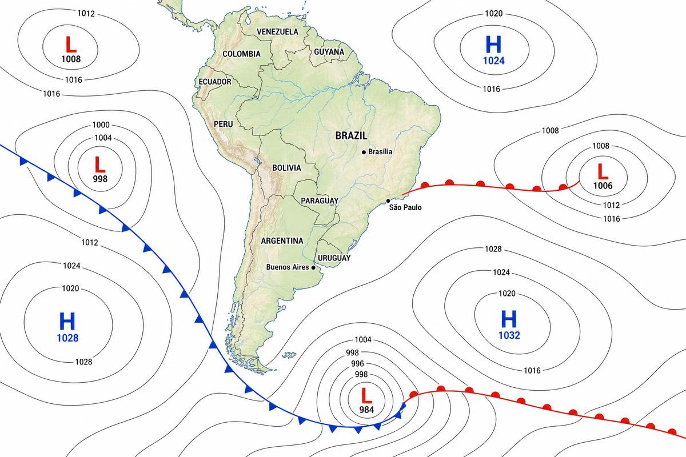
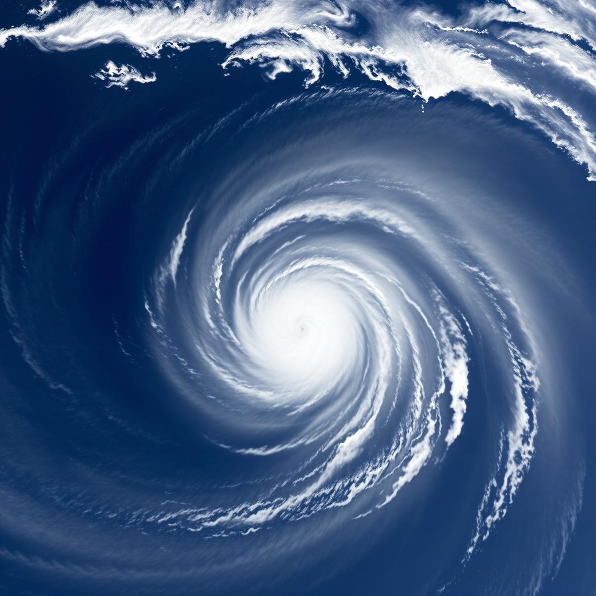
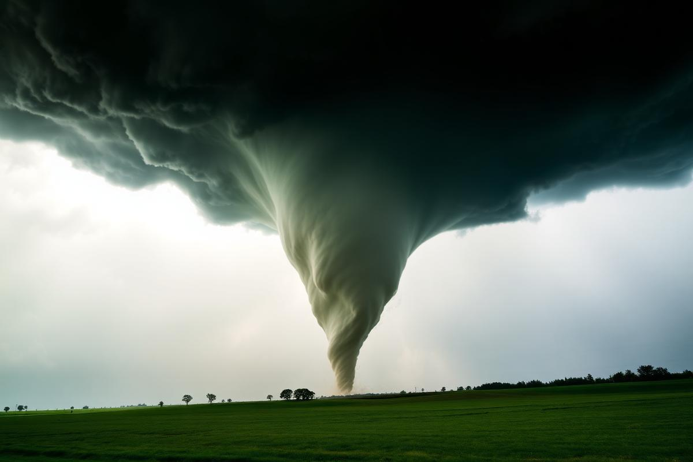
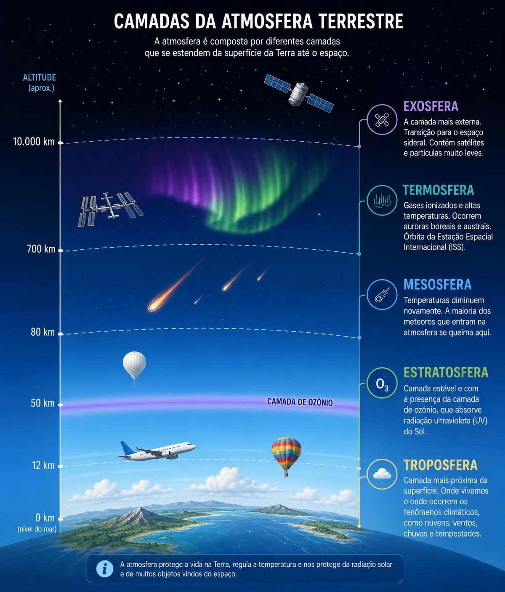
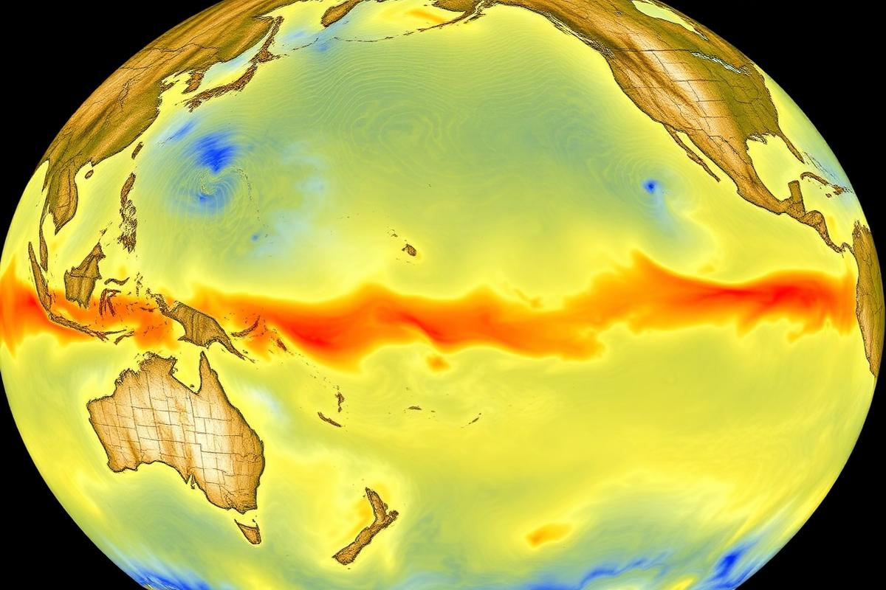
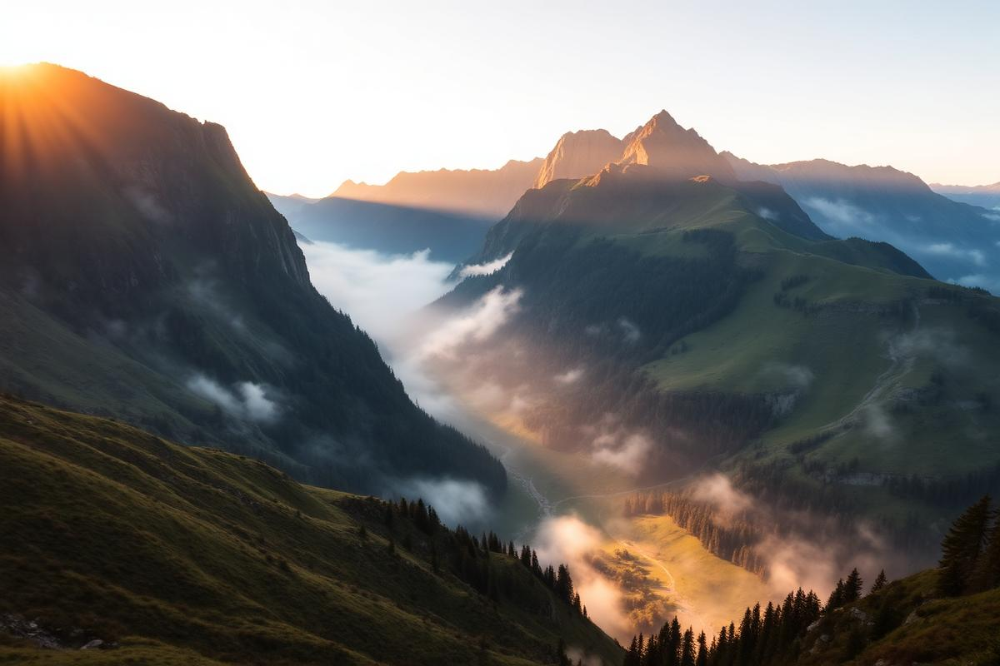

Ponto de partida
Antes de tudo: o básico
Para cursar o nível avançado é necessário já possuir a Especialidade de Climatologia (básico). Nela se aprendem os fundamentos: o que é tempo e o que é clima, os tipos de nuvens, o ciclo da água, os instrumentos simples de observação e as primeiras noções de previsão.
O material completo do requisito básico está disponível neste artigo: Especialidade de Climatologia.
“Tempo” é o estado da atmosfera agora (chove hoje em Curitiba).
“Clima” é o comportamento médio da atmosfera de um lugar ao longo de décadas (Curitiba tem clima
subtropical úmido).
Pressão atmosférica
Áreas ciclonais e anticiclonais
O ar tem peso, e esse peso varia de lugar para lugar. Onde o ar é mais leve (quente e úmido), a pressão cai; onde é mais pesado (frio e seco), a pressão sobe. Toda a dança do tempo nasce dessa diferença.
Área ciclonal — Baixa pressão (B ou L)
É um centro de baixa pressão. O ar da vizinhança converge para o centro e é forçado a subir. Ao subir, ele se expande, esfria, o vapor condensa e formam-se nuvens.
- Rotação: horária no Hemisfério Sul, anti-horária no Norte (efeito Coriolis).
- Tempo produzido: nublado, chuvoso, ventos fortes, instabilidade, trovoadas.
- Barômetro: em queda — o sinal clássico de que o tempo vai piorar.
Área anticiclonal — Alta pressão (A ou H)
É um centro de alta pressão. O ar desce (subsidência), aquece por compressão, as nuvens se dissipam e o ar diverge do centro para fora.
- Rotação: anti-horária no Hemisfério Sul, horária no Norte.
- Tempo produzido: céu limpo, ar seco, ventos fracos; no inverno traz noites frias e geada, no verão calor e estiagem.
- Barômetro: em alta ou estável — bom tempo a caminho.
Curiosidade
- O Anticiclone Subtropical do Atlântico Sul é o grande responsável pelos veranicos e pelos bloqueios de chuva no Sudeste do Brasil.
- A pressão média ao nível do mar é 1013,25 hPa. Abaixo de 1000 hPa, prepare a capa de chuva.
- Uma coluna de ar sobre seus ombros pesa cerca de 1 kg por centímetro quadrado — você carrega toneladas de ar e nem sente, porque a pressão interna do corpo equilibra. Um projeto de engenharia impressionante.
Massas de ar em choque
Frentes frias e frentes quentes

Uma frente é a fronteira entre duas massas de ar com temperatura e umidade diferentes. Elas não se misturam facilmente — brigam, e dessa briga nasce o tempo severo.
Frente fria
O ar frio, mais denso, avança por baixo e empurra o ar quente para cima bruscamente. Move-se rápido (30–60 km/h). Produz nuvens de desenvolvimento vertical (cumulonimbus), pancadas fortes e curtas, rajadas, trovoadas e, às vezes, granizo. Depois da passagem: queda de temperatura, vento sul, ar seco e céu limpo. No Brasil, as frentes frias sobem do sul do continente rumo ao Sudeste e Centro-Oeste.
Frente quente
O ar quente avança e sobe suavemente por cima do ar frio, numa rampa longa. Move-se devagar (20–35 km/h). Produz nuvens estratiformes em sequência (cirrus → cirrostratus → altostratus → nimbostratus), chuva fraca a moderada e contínua por muitas horas, além de nevoeiro. Depois da passagem: temperatura sobe e o ar fica abafado.
Frente oclusa e frente estacionária
Quando a frente fria alcança a quente, o ar quente é levantado por completo: é a frente oclusa (chuva persistente, fim do ciclo). Quando nenhuma das massas consegue avançar, temos a frente estacionária, que pode manter dias seguidos de chuva sobre a mesma região.
Dicionário do céu
Sete fenômenos meteorológicos
Vento adiabático
Processo em que o ar muda de temperatura apenas por variação de pressão, sem trocar calor com o ambiente. Ao subir, expande-se e esfria (≈1 °C a cada 100 m no ar seco); ao descer, comprime-se e esquenta. É o motor da formação de nuvens e o responsável por ventos quentes e secos que descem montanhas, como o Foehn, o Chinook e o brasileiro Vento Norte.
Ventos alísios
Ventos constantes que sopram das altas pressões subtropicais (≈30°) em direção ao equador. Vêm de nordeste no Hemisfério Norte e de sudeste no Hemisfério Sul, desviados pela rotação da Terra. Foram eles que levaram as caravelas às Américas e são eles que trazem umidade do Atlântico para a Amazônia.
Zona de calmaria (Doldrums / ZCIT)
Faixa próxima ao equador onde os alísios dos dois hemisférios se encontram. O ar sobe verticalmente e o vento horizontal quase desaparece — daí “calmaria”. É a Zona de Convergência Intertropical, cinturão de nuvens, calor úmido e chuvas diárias. Veleiros podiam ficar dias parados ali.
Furacão
Ciclone tropical com ventos sustentados acima de 119 km/h, alimentado por oceano quente (acima de 26,5 °C). Tem centenas de quilômetros de diâmetro e um olho central calmo e limpo. Chama-se furacão no Atlântico, tufão no Pacífico Oeste e ciclone no Índico. O Brasil registrou um caso raro em 2004: o furacão Catarina.
Linha de instabilidade
Fileira alongada de tempestades severas, com dezenas ou centenas de quilômetros de extensão, geralmente à frente de uma frente fria. Traz rajadas violentas, granizo e chuva intensa em pouco tempo. Na Amazônia existem as famosas Linhas de Instabilidade Costeiras, que nascem na costa do Pará e atravessam a floresta.
Tornado
Coluna de ar em rotação violenta que liga a base de um cumulonimbus ao solo. É pequeno (dezenas a centenas de metros) e curto (minutos), mas com ventos que passam de 400 km/h nos casos extremos. Medido pela escala Fujita Melhorada (EF0 a EF5). Sobre a água chama-se tromba d'água. O sul do Brasil está no chamado “corredor dos tornados” da América do Sul.
Nevasca
Tempestade de neve acompanhada de ventos fortes (acima de 56 km/h) e visibilidade reduzida a menos de 400 m por três horas ou mais. O perigo maior não é a neve que cai, mas a que o vento levanta — o whiteout, quando o horizonte desaparece por completo.
Como diferenciar furacão e tornado
Tamanho: furacão ≈ 500 km; tornado ≈ 0,5 km.
Duração: furacão dias; tornado minutos.
Origem: furacão nasce sobre o oceano quente; tornado nasce dentro de uma tempestade sobre o
continente.
Ventos: o tornado é menor, porém mais veloz.


Medindo a atmosfera
Registros termométricos, barográficos, higrométricos e anemométricos
Os instrumentos de registro (com o sufixo -grafo) não apenas medem: desenham a variação ao longo do tempo em uma tira de papel presa a um tambor giratório, ou hoje em memória digital. A leitura da curva vale mais que a leitura de um número solto.
| Registro | Instrumento | O que mede | Como funciona | Para que serve na previsão |
|---|---|---|---|---|
| Termométrico | Termômetro / Termógrafo | Temperatura do ar (°C) | Dilatação de líquido (mercúrio/álcool), lâmina bimetálica ou sensor elétrico. Fica no abrigo meteorológico a 1,5 m do solo, à sombra e ventilado. | Máximas e mínimas, risco de geada, cálculo da amplitude térmica e da instabilidade. |
| Barográfico | Barômetro / Barógrafo | Pressão atmosférica (hPa/mb) | Coluna de mercúrio ou cápsula aneroide que se deforma com a pressão. | Queda rápida = chuva e vento a caminho. Alta constante = bom tempo firme. |
| Higrométrico | Higrômetro / Higrógrafo / Psicrômetro | Umidade relativa (%) | Fio de cabelo que se alonga com a umidade, ou dois termômetros (bulbo seco e bulbo úmido). | Risco de nevoeiro, orvalho, conforto térmico, perigo de incêndio quando cai abaixo de 30%. |
| Anemométrico | Anemômetro / Anemógrafo + biruta | Velocidade (km/h, nós) e direção do vento | Conchas ou hélice que giram proporcionalmente à velocidade; a biruta indica de onde o vento vem. | Chegada de frentes, intensidade de tempestades, segurança em aviação e navegação. |
| Complementares | Pluviômetro / Pluviógrafo, Heliógrafo | Chuva (mm) e insolação (h) | Coleta e mede a lâmina de água; queima uma fita ao sol. | Balanço hídrico, agricultura, alerta de enchentes. |
Atenção ao vento: o vento sempre recebe o nome da direção de onde vem. Vento norte é o que sopra do norte para o sul.
Leitura da carta sinótica
Como ler um mapa do tempo
O mapa diário publicado pelos serviços meteorológicos (INMET, Marinha, CPTEC/INPE) é uma fotografia da atmosfera em um horário exato. Ler um mapa é seguir três passos: 1) localizar os centros de pressão; 2) localizar as frentes; 3) ver o espaçamento das isóbaras.
Isóbaras: o segredo do vento
Isóbaras são linhas que unem pontos de igual pressão. Quando estão muito próximas, a diferença de pressão em pouca distância é grande — sinal de ventos fortes. Quando estão afastadas, o vento é fraco. É a mesma lógica das curvas de nível: quanto mais juntas, mais íngreme a ladeira.
Como as previsões são feitas hoje
- Coleta: estações de superfície, radiossondas em balões, boias oceânicas, navios, aviões, radares e satélites (no Brasil, o GOES-19 e o GOES-East).
- Assimilação: milhões de dados são inseridos num modelo matemático que descreve a atmosfera em equações de física (massa, energia e movimento).
- Processamento: supercomputadores dividem a atmosfera em uma grade tridimensional e calculam o estado futuro passo a passo.
- Conjunto (ensemble): roda-se o modelo dezenas de vezes com pequenas variações iniciais; se todas concordam, a confiança é alta — daí vem a “chance de chuva de 70%”.
- Interpretação humana: o meteorologista compara modelos, corrige vieses regionais e emite o boletim.
Por que a previsão erra? Porque a atmosfera é um sistema caótico: uma diferença mínima nas condições iniciais cresce com o tempo (o famoso “efeito borboleta”). Por isso a previsão de 24 h acerta acima de 90% das vezes, enquanto a de 10 dias é apenas uma tendência.
Água invisível
Umidade relativa e ponto de condensação
Umidade relativa do ar
É a relação, em porcentagem, entre o vapor de água que o ar realmente contém e o máximo que ele poderia conter naquela temperatura.
UR = (vapor presente ÷ vapor de saturação) × 100
Ar quente comporta muito mais vapor que ar frio. Por isso, num mesmo dia, a umidade relativa sobe de madrugada (sem que uma gota de água tenha sido acrescentada) apenas porque a temperatura caiu. Abaixo de 30% a OMS considera estado de atenção: ressecamento das vias respiratórias e risco de incêndio.
Ponto de condensação (ponto de orvalho)
É a temperatura na qual o ar, ao esfriar, atinge 100% de umidade relativa e o vapor começa a virar água líquida. Dali nascem orvalho, neblina, nuvens e chuva.
Experiência simples: coloque água gelada num copo de vidro. As gotas que se formam por fora não vazaram — o ar em contato com o vidro esfriou até o ponto de orvalho e condensou.
Quanto mais próximo o ponto de orvalho estiver da temperatura do ar, mais abafado o dia e maior a chance de nevoeiro pela manhã. A base das nuvens fica justamente na altura em que o ar em ascensão alcança o ponto de orvalho — por isso tantas nuvens têm a base plana e alinhada.
Corte transversal
As cinco camadas da atmosfera

Concentra 75% da massa do ar e quase todo o vapor de água. É onde vivemos e onde acontece todo o tempo meteorológico: nuvens, ventos, chuva e tempestades. A temperatura cai cerca de 6,5 °C por km até a tropopausa (−55 °C).
Abriga a camada de ozônio, que absorve a radiação ultravioleta. Por isso a temperatura aqui sobe com a altitude. Ar estável e seco: é a faixa de cruzeiro dos aviões a jato.
A camada mais fria da atmosfera (até −90 °C). É o escudo antimeteoros: quase todos os meteoroides se desintegram aqui, formando as estrelas cadentes.
Gases rarefeitos absorvem raios X e UV extremo; as partículas chegam a mais de 1000 °C, embora o ar seja tão rarefeito que não “esquentaria” um corpo. Contém a ionosfera (que reflete ondas de rádio) e é onde acontecem as auroras e orbita a Estação Espacial.
Transição gradual para o espaço, com hidrogênio e hélio escapando lentamente. Aqui ficam muitos satélites meteorológicos e de comunicação.
Um escudo de precisão
- A atmosfera tem 78% de nitrogênio e 21% de oxigênio. Com muito mais oxigênio, incêndios seriam incontroláveis; com muito menos, não respiraríamos.
- Proporcionalmente, toda a atmosfera é mais fina que a casca de uma maçã em relação à fruta — e ainda assim segura meteoros, filtra o UV e distribui calor pelo planeta.
- Sem o efeito estufa natural (vapor d'água e CO₂), a temperatura média da Terra seria de cerca de −18 °C, e não os agradáveis +15 °C.
Atividade prática — 3 semanas
Diagrama do tempo: como registrar
Este item é feito observando, e não lendo. Durante 21 dias seguidos, sempre nos mesmos horários (sugestão: 7h, 13h e 19h), registre os dados abaixo em uma tabela ou caderno de campo. Ao final, monte um gráfico de linhas para temperatura e pressão, e um gráfico de barras para a chuva.
| Data | Chuva (mm) | Pressão (hPa) | Nuvens | Vento | T. máx / mín | Umidade | Previsão × Real |
|---|---|---|---|---|---|---|---|
| 01/mês | 0,0 | 1018 ↑ | Cirrus | NE 8 km/h | 28 / 17 °C | Orvalho | Sol — acertou |
| 02/mês | 12,5 | 1006 ↓↓ | Cumulonimbus | S 35 km/h | 24 / 18 °C | Chuva | Pancadas — acertou |
| 03/mês | 1,0 | 1011 ↑ | Stratus | SE 12 km/h | 21 / 14 °C | Neblina | Nublado — parcial |
| … | Continue por 21 dias e compare o padrão: quase sempre a queda do barômetro antecede a chuva em 12 a 24 horas. | ||||||
Pluviômetro caseiro
Corte uma garrafa PET de 2 L na altura do ombro, inverta o funil dentro da base e cole uma régua na lateral. Fixe em local aberto, a 1,5 m do chão, longe de paredes e árvores. Meça sempre no mesmo horário e esvazie. 1 mm = 1 litro por metro quadrado.
Cata-vento e biruta
Uma seta que gira livre indica a direção; uma manga de tecido mostra a intensidade. Combine com a Escala Beaufort: folhas paradas (0–5 km/h), bandeiras estendidas (20–28 km/h), galhos grandes se movendo (39–49 km/h).
Nuvens a observar
Cirrus (finas, altas — mudança em 24 h), Cumulus (algodão, bom tempo), Stratus (manto cinza, garoa), Nimbostratus (chuva contínua) e Cumulonimbus (torre com topo em bigorna — tempestade).
Fontes oficiais
Se faltar instrumento, use os dados do INMET, do CPTEC/INPE ou do Centro Meteorológico do seu estado — o requisito permite relatórios oficiais.
Comparar previsão × realidade
Anote todo dia a previsão para o dia seguinte e depois marque se acertou, errou ou acertou em parte. Calcule a porcentagem de acerto ao final das três semanas.
Dica de ouro
Registre também o que você sente: o cheiro de terra molhada antes da chuva (petricor), as andorinhas voando baixo, o formigueiro em atividade. A observação da natureza é o mais antigo dos radares.
Oceano e atmosfera
El Niño e La Niña
Os dois são fases opostas de um mesmo sistema, o ENOS (El Niño–Oscilação Sul), ligado à temperatura das águas do Pacífico Equatorial e à força dos ventos alísios. O nome “El Niño” (o Menino) foi dado por pescadores peruanos porque o aquecimento das águas costumava aparecer perto do Natal, época do Menino Jesus.
El Niño — aquecimento anômalo
Os alísios enfraquecem, a água quente se acumula no Pacífico central e leste, e a circulação atmosférica se reorganiza. Consequências na América do Sul:
- Sul do Brasil, Uruguai e norte da Argentina: chuvas acima da média, enchentes.
- Norte e Nordeste do Brasil: seca severa, atraso das chuvas, estiagem na Amazônia.
- Sudeste: temperaturas mais altas, comportamento irregular das chuvas.
- Costa do Peru e Equador: chuvas torrenciais e colapso da pesca de anchovas (a água quente afunda os nutrientes).
La Niña — resfriamento anômalo
Os alísios se intensificam e trazem água fria das profundezas para a superfície. Os efeitos tendem a ser o espelho do El Niño:
- Sul do Brasil: secas e estiagens, prejuízo às lavouras de soja e milho.
- Norte e Nordeste: chuvas na média ou acima dela.
- Inverno: mais entradas de ar frio e episódios de friagem.
- Maior atividade de furacões no Atlântico Norte.

Pesquisa dirigida
Ventos anabático e catabático

| Anabático (brisa de vale) | Catabático (brisa de montanha) | |
|---|---|---|
| Direção | Sobe a encosta (do vale para o cume) | Desce a encosta (do cume para o vale) |
| Quando ocorre | Durante o dia, sob sol forte | À noite e de madrugada, céu limpo |
| Formação | O sol aquece a encosta; o ar em contato aquece, fica menos denso e sobe por flutuabilidade | A encosta perde calor por radiação; o ar em contato esfria, fica mais denso e escorre por gravidade |
| Processo termodinâmico | Expansão adiabática: ao subir, a pressão cai, o ar se expande e esfria (~1 °C/100 m). Pode atingir o ponto de orvalho e formar cumulus sobre os picos. | Compressão adiabática: ao descer, a pressão sobe, o ar se comprime e aquece — mas parte tão frio que ainda chega gelado ao fundo do vale. |
| Velocidade | Suave, geralmente 5–15 km/h | Pode ser suave ou violento; nas geleiras da Antártida e Groenlândia passa de 100 km/h |
| Efeitos práticos | Nuvens de bom tempo sobre serras; térmicas usadas por planadores, parapentes e aves de rapina | Acúmulo de ar frio no fundo dos vales (“poças de frio”), geada, nevoeiro de radiação e inversão térmica |
Curiosidade: por isso os cafezais e vinhedos são plantados na meia encosta, e não no fundo do vale — ali o vento catabático deposita o ar mais frio e a geada queima a lavoura.
Debate em grupo
O clima, o Criador e a redenção
“Ele faz subir os vapores das extremidades da Terra; faz os relâmpagos para a chuva e faz sair o vento dos seus tesouros.”
Salmos 135:7Benefícios que a criação do clima trouxe ao homem
O clima não é um acidente: é um sistema de manutenção da vida projetado com precisão.
- Ciclo da água: o oceano é salgado, mas a evaporação destila água pura e a distribui gratuitamente sobre os continentes (Jó 36:27-28). Nenhuma estação de tratamento humana chega perto dessa eficiência.
- Estações do ano: a inclinação de 23,5° do eixo da Terra cria o ritmo de semear e colher prometido em Gênesis 8:22.
- Distribuição do calor: ventos e correntes marinhas levam calor do equador para os polos, tornando habitável quase todo o planeta.
- Limpeza da atmosfera: a chuva lava o ar; os raios fixam nitrogênio no solo, adubando naturalmente as plantações.
- Camada de ozônio e campo magnético: escudos contra radiação letal.
- Beleza: o arco-íris, o pôr do sol, a neve e as nuvens não são necessários à sobrevivência — são um presente estético do Criador.
Um ajuste fino difícil de explicar pelo acaso
A água tem um comportamento único: ao congelar, ela se expande e o gelo flutua. Se afundasse, lagos e oceanos congelariam do fundo para a superfície e a vida aquática desapareceria. Some-se a isso o calor específico altíssimo da água, que estabiliza a temperatura do planeta, e o vapor d'água, que funciona como cobertor térmico noturno.
Para o criacionista, esse conjunto de coincidências favoráveis aponta para projeto, não para sorte: “Os céus proclamam a glória de Deus e o firmamento anuncia a obra das suas mãos” (Salmos 19:1).
A relação entre o clima e a vontade de Deus
A Bíblia apresenta Deus como o Sustentador ativo da natureza, não como um relojoeiro ausente. Ele “dá chuva sobre a face da terra” (Jó 5:10) e faz o sol nascer “sobre maus e bons, e a chuva descer sobre justos e injustos” (Mateus 5:45) — o clima é, antes de tudo, expressão da graça comum, um benefício dado a todos.
As Escrituras mostram também momentos em que Deus interveio diretamente: o granizo no Egito (Êxodo 9), os três anos e meio sem chuva a pedido de Elias (1 Reis 17; Tiago 5:17), a tempestade acalmada por Jesus com uma palavra (Marcos 4:39). Isso não significa que cada chuva ou seca de hoje seja um juízo específico — Jesus advertiu contra ler tragédias assim (Lucas 13:1-5). O equilíbrio bíblico é: Deus sustenta as leis naturais que Ele mesmo criou, e ocasionalmente age acima delas para revelar Seu caráter e cumprir Seus propósitos.
Os efeitos do pecado sobre o clima
No Éden original, o relato bíblico descreve um ambiente estável, irrigado por um vapor ou neblina que subia da terra (Gênesis 2:5-6) — sem registro de tempestades destrutivas.
Com a entrada do pecado, a terra foi amaldiçoada (Gênesis 3:17-18) e toda a criação passou a “gemer” sob corrupção (Romanos 8:20-22). O Dilúvio foi o divisor de águas climático: rompimento das “fontes do grande abismo”, chuva torrencial inédita, reorganização de continentes e oceanos e, logo depois, a primeira menção explícita a frio e calor, verão e inverno como ciclos contrastantes (Gênesis 8:22). Muitos criacionistas associam a esse evento a formação da Era do Gelo pós-diluviana, com oceanos aquecidos evaporando intensamente sobre continentes frios.
Há ainda um efeito moral e prático do pecado: a má administração da terra que Deus mandou cuidar (Gênesis 2:15). Desmatamento, queimadas, poluição do ar e das águas, impermeabilização do solo e ocupação de encostas e várzeas transformam eventos naturais em tragédias humanas. Apocalipse 11:18 fala em Deus “destruir os que destroem a terra”.
A profecia bíblica também descreve um agravamento dos desastres nos últimos dias: “sinais no sol, na lua e nas estrelas… o bramido do mar e das ondas” (Lucas 21:25). O desequilíbrio do clima é, portanto, sintoma de um mundo que precisa ser restaurado — e não a palavra final sobre ele.
Como Deus pode usar o clima como ferramenta de salvação
- Como revelação: a chuva e as estações são “testemunho” do Criador a todos os povos, deixando o ser humano “sem desculpa” (Atos 14:17; Romanos 1:20).
- Como chamado ao arrependimento: a tempestade de Jonas levou marinheiros pagãos a temerem e adorarem ao Senhor (Jonas 1). Deus usou o vento para redirecionar um profeta fugitivo — e converteu uma tripulação inteira no processo.
- Como proteção: Deus fechou as águas do mar Vermelho para salvar Israel e enviou orvalho e maná no deserto por quarenta anos.
- Como lição espiritual: Jesus comparou a fé a uma casa sobre a rocha diante da tempestade (Mateus 7:24-27), e o Espírito Santo ao vento que sopra onde quer (João 3:8). O ciclo da água ilustra a Palavra que desce, rega e não volta vazia (Isaías 55:10-11).
- Como oportunidade de serviço: depois de enchentes e vendavais, é a igreja e são os Desbravadores quem chegam com água, cobertores e mãos dispostas. A ADRA e as brigadas de socorro mostram o amor de Cristo de forma concreta — muitas vezes, é o primeiro contato de alguém com o Evangelho.
- Como esperança final: a promessa é de “novos céus e nova terra” (Apocalipse 21:1-4), onde não haverá mais destruição. O desbravador que estuda o clima aprende a admirar o presente e a esperar o que ainda virá.
“Ainda que a figueira não floresça… todavia eu me alegrarei no Senhor, exultarei no Deus da minha salvação.”
Habacuque 3:17-18Para fechar
Glossário rápido
| Termo | Significado |
|---|---|
| Isóbara | Linha que une pontos de mesma pressão atmosférica. |
| Isoterma | Linha que une pontos de mesma temperatura. |
| Efeito Coriolis | Desvio aparente dos ventos causado pela rotação da Terra: para a esquerda no Hemisfério Sul. |
| Adiabático | Mudança de temperatura por variação de pressão, sem troca de calor com o meio. |
| Inversão térmica | Camada de ar quente sobre ar frio, que prende poluentes junto ao solo. |
| ZCIT | Zona de Convergência Intertropical — cinturão de chuvas do equador. |
| ZCAS | Zona de Convergência do Atlântico Sul — corredor de umidade que traz chuvas persistentes ao Brasil no verão. |
| Hectopascal (hPa) | Unidade de pressão; equivale ao antigo milibar. Padrão: 1013,25 hPa. |
| Nó | Unidade de velocidade do vento: 1 nó = 1,852 km/h. |
| Radiossonda | Sensor levado por balão que mede a atmosfera até a estratosfera. |